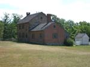
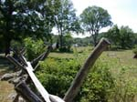
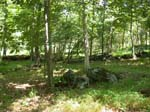
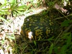

| page 3 of 12 |
| Day Two with Prof. Gary Gallagher 7/27/2001 |
UCLA at Gettysburg Journal |
| page 3 of 12 |
|  |
 |
|
| Bushman farm. | Slyder farm (viewed from the west.) | Prof. Waugh and the group head toward Devil's Den from the Bushman farm. Photo by Roy. |
|  |
||
| Remnants of a wall crossed by Robertson's brigade on their way to Devil's Den. | Prof. Gallagher describes the movements of the regiments in Robertson's brigade in the woods west of Plum Run and Devil's Den. | Roy gets into the ambience... puff puff... |
|  |
||
| Don is puffing away too... (Photo by Roy) | We almost stumbled over a box turtle hiding in the grass. | Vestiges of the trolly system which used to cover the battlefield. |